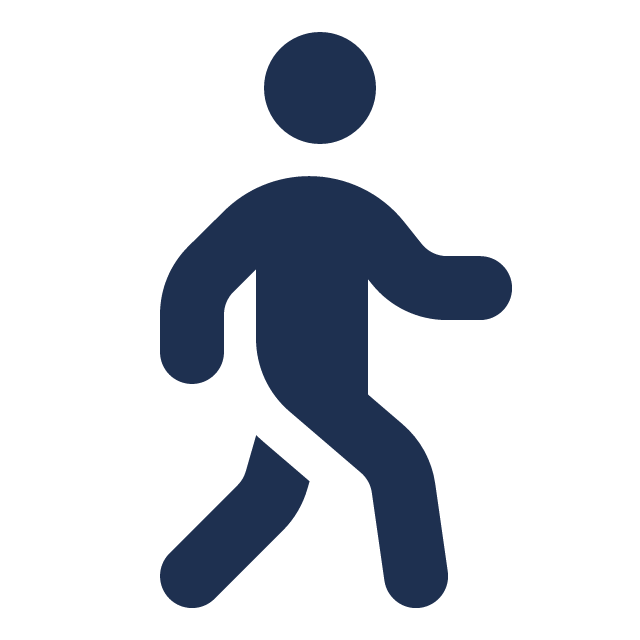

Research & innovation
Cutting-edge findings across transport modelling, electrification, active travel and intelligent systems.
Exeter · United Kingdom
A two-day symposium for researchers, practitioners and policymakers working on sustainable transport and mobility.
An invitation-only event.
The European Mobility Symposium brings together researchers, practitioners and policymakers to exchange ideas and evidence on European transport and mobility. Add a short paragraph here describing this year's theme and scope.

Cutting-edge findings across transport modelling, electrification, active travel and intelligent systems.
Cross-border collaboration and policy insight drawn from cities and regions across the continent.
Keynotes, panels and informal sessions designed to spark new partnerships and ideas.
Logos of supporting institutions will appear here.